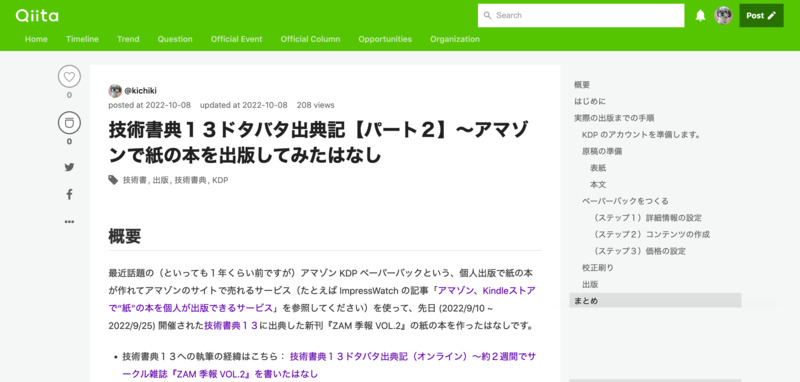
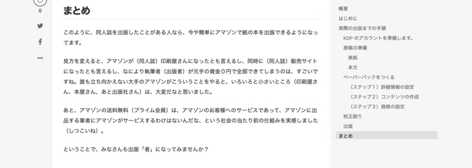
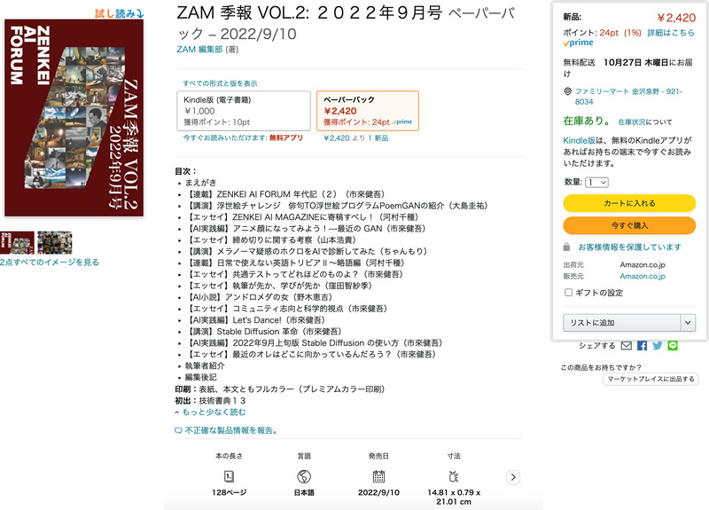
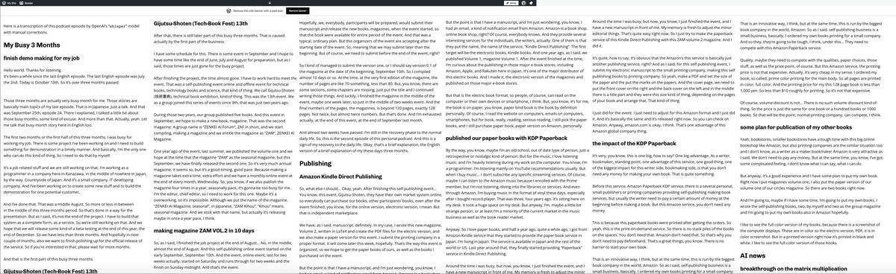
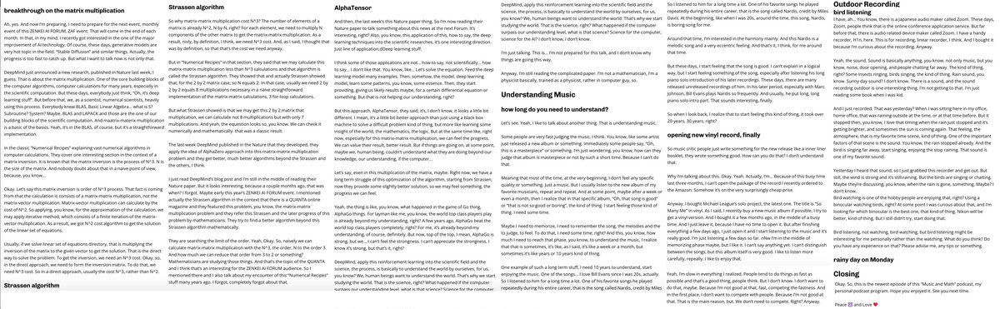
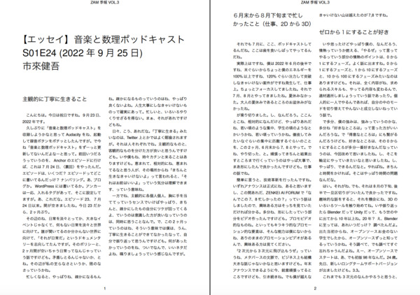
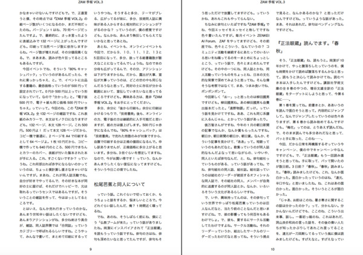
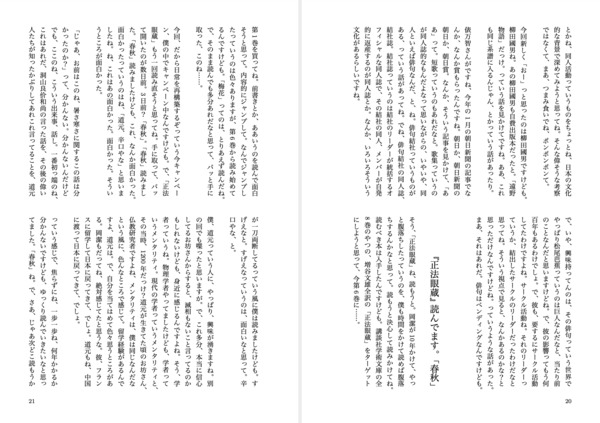
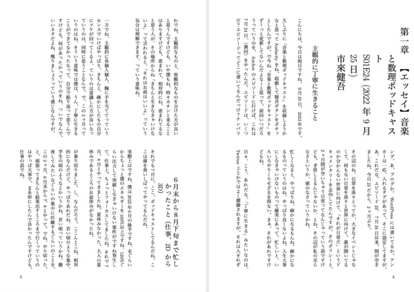

ZAF 2022 年 10 月 26 日
＜本日のテーマ＞
最近の話題から
〜2022年秋〜
目次
- [6:30 - 7:00] 前座
- [7:00 - 8:00] パート１ 数理クイズ
- [8:00 - 9:00] パート２ AlphaTensor
- 今日のおわりに
- 総合目次
YouTube のアーカイブ・ビデオはこちら
(
https://youtube.com/live/CCEpzAltrUM)

（前座）その１
（個人）出版とその周辺について
（個人）出版とその周辺について
技術書典１３、終了しました
- 9/25 (Sun) 技術書典１３、終了

- 9/28 (Wed) ZAF-2209


Amazon KDP ペーパーバック、試してみた
- Qiita:
技術書典１３ドタバタ出典記【パート２】〜アマゾンで紙の本を出版してみたはなし
  - アマゾンのサイト (https://www.amazon.co.jp/dp/B0BHG8GJDR)
 - 出来上がって届いた本


- KDP 管理サイト


日光企画さんから、グッズが届いた


技術書典さんから、後から印刷の残部が発送された
- 今回の「技術書典１３」で出した新刊の『ZAM 季報 VOL.2』は、
「後から印刷」で紙の本を刷りました- イベントで売れたのは７冊でしがが、印刷は３０冊、発注しました
- （うわさの「８０％キャッシュバック」は７冊分にしか適用されないのは、 知ってます……涙）
- この残り２０数冊が、先日、発送されました
(https://twitter.com/ichiki_k/status/1584539892217888769)

- この２０数冊は、執筆者、関係者に配った後、
残りは BOOTH (https://zenkei.booth.pm/) で頒布予定です！


準備ができるまで、しばらくお待ちください！


「文学フリマ」というものの成り立ちを知る
- 「技術書典」に２年参加してきた今、
２０年前に「文学フリマ」がはじまったいきさつについて、読んだ。
そして、感動した。そのはなしをしたい。 - ここで思い出すのは、 Derek Sivers が TED でしゃべった５分のプレゼン
How To Start A Movement

- ポイントを引用
教訓をおさらいしましょう
まず 彼のように １人裸で踊るタイプの人は、最初の何人かのフォロワーを 対等に扱う大切さを 覚えておいてください。 肝心なのは自分ではなく 運動だということです。
しかし、ここでの最大の教訓は リーダーシップが 過大評価されているということです。 確かにあの裸の男が最初でした 彼には功績があります。 でも１人のバカを リーダーに変えたのは 最初のフォロワーだったのです。 全員がリーダーになるべきだと よく言いますが それは効果的ではありません。
本当に運動を 起こそうと思うなら、ついて行く勇気を持ち、他の人達にも その方法を示すことです。 スゴイことをしている 孤独なバカを見つけたら、立ち上がって参加する 最初の人間となる 勇気を持ってください。 ここTEDは そのための最高の場所です
- ポイントを引用
- 大塚さんは「shirtless dancince guy」だったが、
２０年後の今も「文学フリマ」が続いていることを考えると、
うまく Movement を起こせたんだな、と思う - それが２０年後の今、「技術書典」に出会ったり、
アマゾンの KDP ペーパーバックというサービスに触れたり、と。 - 「Amazon の KDP ペーパーバック」は
出版業界における DX
と捉えることもできる
（そういうと、逆に、陳腐になってしまうが） - プレーヤー
- 作家 / 出版社、取次（流通） / 本屋 / 顧客（読者）
- 問題点
- 作家の取り分が少ない（印税 10% とか）
- 書店の取り分が少ない（本体価格の 10% とか）
- 再販売価格維持（通称「再販制度」） - 出版社を保護
- 流通システムが閉鎖的
- そもそもの本離れ（cf. 先の「文学フリマ」提案時の「文学」のはなし）
- 「文学フリマ」がやったこと
- 出版社、取次に寄らない「マーケット」の構築
- 同人活動、つまり、作家と読者の垣根を取り払う（「コミュニティ経済」）
- 「Amazon KDP ペーパーバック」がやったこと
- （個人）作家に、出版社、取次に依らない形で「アマゾン」のマーケットを開放
- 印刷（同人では作家が印刷屋さんに手配してた部分）もアマゾンが担当
- POD (print on demand) により、作家の負担する初期費用が０円
- 思うところ
- 既得権に安住していた「出版社」「流通」に依存しない構造の提案は、 マーケットの正常化になる
- 一方で、草の根的にがんばっている（地方、中小）「書店」は救われないまま
（そもそもアマゾンという存在が、彼らを窮地に追い込んでいる） - 今回の KDP ペーパーバックは、
同様に草の根的にがんばっている
中小の「（同人誌）印刷屋」さんも 窮地に追い込む形になっている
- 次の一手は、どの方向か？
- つまり、歪んだマーケット構造のうち
- 必然的に
アマゾンの独占からの脱却（？）
- 地域（ローカル）で経済を回すには？
- 多様性を持ちながら、生きていく方法は？
- コミュニティ経済？
- つまり、歪んだマーケット構造のうち
- 念頭にあるのは、
- 街の本屋さん
- 中小の（同人誌）印刷所
- 個人出版者、小出版社


（目次に戻る）
（前座）その２
ポッドキャスト
ポッドキャスト
- 日常への回帰というはなしは、先月の ZAF-2209 で話した
- 引き続き、日常への回帰を進めてます！
ZENKEI AI ポッドキャスト
シーズン２５に突入
シーズン２５に突入
- シーズン２５は、 ZAF-2201 (2022年1月26日)の内容です！

- （2022年10月19日公開） S25E01 （前座）コロナ、ポッドキャストの新方針、技術書典１２
- （2022年10月26日公開） S25E02 （脱線）「同人誌」とは？
- （2022年11月2日公開予定） S25E03 ２０２２年の画像分類、モデル編
- （2022年11月9日公開予定） S25E04 ２０２２年の画像分類、実践編

音楽と数理 🎼 ♾ ポッドキャストも
ボチボチと再開中
ボチボチと再開中

- (9/25/22公開)
S01E24
〈トーク〉復活、忙殺されず丁寧に生きること、技術書典１３、正法眼蔵と「竜とそばかすの姫」
- 前回 ZAF-2209 でも紹介した
- (10/13/22公開) S01E25 (English) Busy 3 Months and Publishing Book on Amazon and Matrix Multiplication
- (10/23/22公開) S01E26 〈Music+Talk〉Louis Cole 特集
- (収録予定) S01E27 〈裏〉Louis Cole 特集
- (収録予定) S01E28(?) 〈ピアノ〉そろそろ何かピアノ回やらないとな、と
ポッドキャスト ランキング
- 今日、はなしたいネタは、ポッドキャスト ランキング
(https://podcastranking.jp/1619775285)
- （はい、アテンションは、狙わない、「そいつがオレのやり方」ですが……）
- 10/19 の Podcast Ranking


- 10/25 の Podcast Ranking


- 「個人ジャーナル」カテゴリーで８位！に入ったときのスクショ

- もう、オレ、若林恵を超えてしまったね。
- 理由が、今も、分からない
- （だから、このあっテンションを継続する術を知らない。ま、いいんだけど）
- 再生回数の伸び
10/19 16:26:19 10/25 21:17:38 

- どうも最新の「英語回」がドカンときている模様


- 「やっぱり、世界に語りかけると違うな」と思ったら、
どうもそうではないようで…
- 結局、
どうしてアクセス増えたのか
理由が分からない……
- 何か心当たりのある人いたら、教えてください
- （ま、分かっても、どうなるもんでもないですが）


惑わされることなく、粛々と
音楽回をリリース
音楽回をリリース
- ということで、気にせずに、いつも通りの音楽回をリリース


- 音楽回の低迷ぶり

- こっちの理由は分かっていて、
要するに Spotify のプレミア会員じゃないと音楽聴けないから
- それではつまらないので、
誰でもフルで音楽も聴けるように、
YouTube のプレイリスト版も毎度つくって公開してます！

- 音楽回の低迷ぶり


（目次に戻る）
（前座）その３
"Whisper"
という音声認識ニュラルネット
- OpenAI が発表した "Whisper" という音声認識 ニュラルネットがすごいらしい
- モデルも公開されているということなので、試してみた
日本語でもすごいらしい、という噂
- https://twitter.com/ichiki_k/status/1580391974435057664

- https://twitter.com/yutatatatata/status/1580330471728156672

- 音声認識モデルwhisperの全モデル文字起こし比較 (2022-10-13)

- 白金鉱業.FM
(twitter: @shirokane_fm)

- 60. Podcast革命のラストピース、高精度音声認識モデル"Whisper" (2022年10月08日)


OpenAI の情報
- OpenAI のブログエントリー
(https://openai.com/blog/whisper/)
"Introducing Whisper"
(September 21, 2022)


- 論文： https://cdn.openai.com/papers/whisper.pdf


ローカルマシンにインストール
- pip 一発で完了！


- と思ったら、音声ファイルの変換に ffmpeg を使っていて、
ffmpeg が入ってない場合はインストールする必要がある


- と言っても、こちらも apt install 一発で完了！
- 早速、書き起こししてみよう！


自分のポッドキャストの文字起こし
英語回
英語回
- 最初は最新の英語回のエピソード
- コマンドラインからの起動

- タイムスタンプ込みで出力される
- せっかく Jupyter 環境にセットアップしたので、
python から叩いてみる
- 英語の場合は、デフォルトの base モデルで十分かもしれない
- 手で一通り校正したあとの、英語の書き下ろし結果
(https://music0math.wordpress.com/2022/10/13/english-busy-3-months-and-publishing-book-on-amazon-and-matrix-multiplication-s01e25/)
 


自分のポッドキャストの文字起こし
日本語のエピソード
日本語のエピソード
- 次は、日本語に挑戦

- デフォルトの base モデル

- パッと目、いけてるように見えますが、
よくみると、このままでは使えない感じですね
- パッと目、いけてるように見えますが、
- 最大の large モデル

- 流石に最大モデル、結構いけてる感じです
でも、よくよくみると、多少は校正の必要がありますね、分の区切りとか。
- 流石に最大モデル、結構いけてる感じです
- 〈トーク〉復活、忙殺されず丁寧に生きること、技術書典１３、正法眼蔵と「竜とそばかすの姫」(S01E24)


LaTeX で版組
- LaTeX で版組してみる

- 『ZAM 季報』スタイル（横書き２段組）
  - 日本語のエッセイなら縦書きだろう、
ということで、縦書き２段組 (uplatex + jlreq)- 「(Linux) upLaTeX + jlreq で小説原稿を作る」

- LaTeX で縦書き、おもしろいかもしれない
 
- 「(Linux) upLaTeX + jlreq で小説原稿を作る」
- よしっ、
ポッドキャストの「エッセイ集」を出版しよう！
かな？
- 次の「技術書典」に出そうかな？
- あ、それこそ「文学フリマ」に出せるんじゃないかな？


ZENKEI AI ポッドキャストも文字起こし
- ZAP も、最新シーズン25から、順次、書き起こししていく予定


（目次に戻る）
パート１
数理クイズ
- ツイートに出題しました
(https://twitter.com/ichiki_k/status/1583042537089925120)


Tupper's self-referential formula
- というツイートが流れてきた
(https://twitter.com/fermatslibrary/status/1580856948873797633)

- これ見たとき、スゲェ、と思いました（思ってしまった）
- で、これを ZENKEI AI FORUM のネタにしょうと思った

Tupper の公式は、凄くない？
- こんなツイート
(https://twitter.com/m_hoehle/status/1581916554383749125)

- これは凄くないよ、と
- Tupper's Self Referential Formula in R (Oct 17, 2022)

- Wikipedia:
Tupper's self-referential formula
- 見てみると、この式で計算された絵だけど、
y の範囲が k <= y <= k + 17 で、
k は960 939 379 918 958 884 971 672 962 127 852 754 715 004 339 660 129 306 651 505 519 271 702 802 395 266 424 689 642 842 174 350 718 121 267 153 782 770 623 355 993 237 280 874 144 307 891 325 963 941 337 723 487 857 735 749 823 926 629 715 517 173 716 995 165 232 890 538 221 612 403 238 855 866 184 013 235 585 136 048 828 693 337 902 491 454 229 288 667 081 096 184 496 091 705 183 454 067 827 731 551 705 405 381 627 380 967 602 565 625 016 981 482 083 418 783 163 849 115 590 225 610 003 652 351 370 343 874 461 848 378 737 238 198 224 849 863 465 033 159 410 054 974 700 593 138 339 226 497 249 461 751 545 728 366 702 369 745 461 014 655 997 933 798 537 483 143 786 841 806 593 422 227 898 388 722 980 000 748 404 719
だ、と……？
- 見てみると、この式で計算された絵だけど、


Tupper の公式が載ってる論文を読む
- Tupper によるオリジナルの論文 (http://www.dgp.toronto.edu/~mooncake/papers/SIGGRAPH2001_Tupper.pdf) を見てみる


- 確かに、図１３に書いてある。
- しかし「1696 x 272 pixmap」で、とか書いてあるぞ
- 1696 x 272 = 16 * (106 x 17) だね
- この論文を読んでみると、これは
- 陰関数で表現された数式を、
２次元平面（コンピュータのディスプレイや紙の上）に
描画する計算方法
- 陰関数で表現された数式を、
- つまり、数式で表現される曲線（グラフ）は幅という概念がないが、
線を描画するには、例えば１ピクセルならその幅があるし、
厳密にはその１ピクセルの右端と左端がある。 - 数式で表されるグラフをピクセルで表すには、従って、
interval に対する演算を使って定義する必要がある、と。 - そういう algorithm を議論している論文だった
- そのデモとして、不等式で表現されたグラフを、その algorithm で描画したのが
図１３ということ。
１つのブロックが 16 x 16 ピクセルになる縮尺で描画されている、と - それに、この式のどこにも 「自己言及」(self-referential) の語は、ない。
- 実際、広い平面の一部分
k <= y <= k + 17 を短冊状に切り出したら、あのグラフになる、ということ。 - で、この k の値が、馬鹿でかい
- 上で謎解きしてる Michael Höhle さんは R 上で GMP を使って、この式を実際に計算している
- GMP は GNU Multiple Precision Arithmetic Library ですね
- ぼくは、それなりに詳しいです。実際に使ったことあるので
(cf. 厳密な計算)


- ぼくは、それなりに詳しいです。実際に使ったことあるので
(cf. 厳密な計算)


Python と GMP で実装してみよう！
- GMP を使えるように、ライブラリなどインストール


- Tupper の公式を実装

- プロットしてみる

- 試しに k <= y <= y + 107 の領域（従って 107 x 107 の領域）を
プロットしてみる

- Wikipedia: バベルの図書館


ということで、改めて
今回の数理クイズ
今回の数理クイズ
- さて、ここまでくれば、今回の「数理クイズ」は分かるでしょう。
以下の暗号を解読せよ。
43978126172507707808745349168686271418731968199521663065543637044239873449524996 59829454393243564097819763019953699248969679512415847860233131861557294198784619 94770314820702010547215172154028757368144359850650246894230034763278100203068370 73057721437834876520073752898096408149636722415597132295523506856452928373694192 06578722937804513176189280937214211579464366642321178262728033845836565785125634 60948828067032694457239156851422178117088566954480660334313585524603281813995871 480699265233126537967924721425343815470951694336
（目次に戻る）
パート２
AlphaTensor
AlphaTensor
これまでのはなし
- ツイート
(https://twitter.com/ichiki_k/status/1577891069613727744)


- かつて、2021年3月 ZAF-2103


- ということで、
ZENKEI AI FORUM としては
今回の DeepMind の研究を
取り上げないといけない！


ということで、まずは
DeepMind のブログを読んでみた
DeepMind のブログを読んでみた
- Discovering novel algorithms with AlphaTensor (October 5, 2022)

- DeepMind は「強化学習」の領域の巨人（それだけでなく、Deep Learning 一般だけど）
- 今回、 AI で数学の問題を解くことに挑戦した、というはなし
- 多分、ポイントは、
「（数学の）問題」を
「強化学習」の枠組みに
落とし込むか？

- 10/10 収録の「音楽と数理 🎼 ♾ ポッドキャスト」
(English) Busy 3 Months and Publishing Book on Amazon and Matrix Multiplication (S01E25)


- AI news
オリジナル（英語） 日本語 AlphaTensor
And then, the last week’s this Nature paper thing. So I’m now reading their Nature paper to talk something about this news at the next Forum. It’s interesting, right? Also, you know, this application of this, how to say, the deep learning techniques into the scientific researches, it’s one interesting direction. Just line of application,dDeep learning stuff.
I think some of those applications are not… how to say, not scientifically… how to say… I don’t like that. You know, like… Let’s solve the equation. Feed the deep learning model many examples. Then, somehow, the model, deep learning model, learn some patterns, you know, some essence. Then, they start providing, giving us likely results maybe, for a certain differential equation or something. But that is not helping our understanding, right?
But this approach, AlphaTensor, they said, it’s, I don’t know, it looks a little bit different. I mean, it’s a little bit better approach than just using a black box machine to solve a difficult problem kind of thing, but more like learning some insight of the world, the mathematics, the logic. But at the same time like, right now, especially for this matrix-matrix multiplication, we can feel the progress. We can value their result, better result. But if things are going on, at some point, maybe we, human being, couldn’t understand what they are doing beyond our knowledge, our understanding, if the computer…
Let’s say, even in this multiplication of the matrix, maybe. Right now, we have a long term struggle of this optimization of the algorithm, starting from Strassen, now they provide some slightly better solution, so we may feel something, the progress we can feel.
Yeah, the thing is like, you know, what happened in the game of Go thing, AlphaGo things. For layman like me, you know, the world top class players play is already beyond my understanding, right? A few years ago, AlphaGo beat the world top class players completely, right? For me, it’s already beyond my understanding, of course, definitely. But now, top of the top, I mean, AlphaGo is strong, but we.., I can’t feel the strongness. I can’t appreciate the strongness. I know it’s strong, but that’s it, right?
DeepMind, apply this reinforcement learning into the scientific field and the science, the process, is basically to understand the world by ourselves, for us, you know? We, human beings want to understand the world. That’s why we start studying the world. That is the science, right? What happened if the computer surpass our understanding level, what is that science? Science for the computer, science for the AI? I don’t know, I don’t know.
I’m just talking. This is… I’m not prepared for this talk, and I don’t know why things are going this way.
Anyway, I’m still reading the complicated paper. I’m not a mathematician, I’m a physicist basically, trained as a physicist, rather in computer guy, so.AlphaTensor
で、先週のネイチャーの論文の件。 ってことで今、来週のフォーラムで何かしゃべるために、 彼らのネイチャーの論文を読み始めてるんだけど。 これって面白い話だよね？ それに、この種類の応用、なといえばいいか、科学的な研究への deep learning 技術の応用、 これって１つの面白い方向だよね、 deep learning の応用という文脈で。
個人的には、ある種のこういう応用って、なんというか、科学的ではないというか…… 要するに好きじゃないんだな。 例えば、ある方程式を解こう、というようなやつ。 Deep learning モデルにたくさんの解を食わせて、 そうすると当然、どういうわけかは知らないけど、その deep learning モデルは ある種のパターンというかエッセンスを学ぶ。 そして、それっぽい答えを答え始めるんだろう、 ある微分方程式か何かに対して。 でも、これってぼくらの理解を何も助けてないよね？
一方、今回のこのアプローチ、 AlphaTensor は、よくわかんないけど、 それとは少し違うような気がする。 というか、多少ましかな、と。難しい問題かなにかを解くために、 ブラックボックスを使うんじゃなくて、 世界に対する何らかの直感というか、数学というか、ロジックというか、 そういうものを使うというか。 でも、同時に、今の場合、特にこの行列と行列の積の計算については、 ぼくらはその進歩を感じることができる。 彼らの結果、改善されたその結果の価値を、理解することができる。 これがこのまま進んでいくと、どこかの時点で多分、ぼくら人間は 彼らがやってることを理解できなくなる時がくる。 ぼくらの知識を超えたところ、理解を超えたところまでいって……
いや、きっと今回の行列積の問題に対しても、多分。 今現在、ぼくらはこのアルゴリズムの最適化、Strassen からはじまる努力の歴史があって、 いまコンピュータがちょっとだけ優れた解を見つけたところで、 だからこそ、ぼくらはそこに何かしら感じることができる。その進歩というものを。
そう、つまり、例えば囲碁の時、 AlphaGo の時に起きたことを考えても、 ぼくのような囲碁の素人にとっては、世界レベルの棋士の勝負ってすでに理解を超えているわけ。 数年前 AlphaGo が Lee Sedol を完全に打ち破ったけど、 ぼくにとっては、もちろん、それは完全に理解を超えてたわけ。 で、今、最高峰の強さ、つまり AlphaGo は強いんだけど、 ぼくはその強さを感じることはできないわけ。 ぼくはその強さを味わうことができない。 もちろん、それが強いことは分かるけど、それだけってことなの。
DeepMind は、この強化学習を科学研究の分野、つまり科学に応用して…… 科学ってものは、ぼくらが世界を理解しようという営み、ぼくらのために、なんだけど。 ぼくら人間は、世界が理解したい、と。 それがぼくらが世界を調べ始めた理由だと思うし、それが科学だよね。 もし、コンピュータがぼくらの理解のレベルを超えてしまったら、どうなるんだろう？ そのときの科学ってなんなんだろう？ それってコンピュータにとっての科学になるの？AI にとっての科学？ よくわかんないけど。
えっと、これってぼく、ただ喋ってるだけで、なんの準備もなく。 だから、なんで話がこんなになったのか分かんないけど……。
いずれにせよ、ぼくは今この複雑な論文を読んでるところです。 でも、そもそもぼくは数学者じゃないので。 基本的には物理屋さんで、物理学者としてトレーニングを受けてきたんで。 というか、どっちかというとコンピュータ好きって感じだけど。


行列積の本道の研究はどうなってるのかな？
- まだ DeepMind の論文は読みかけだけど、 Strassen くらいしか議論されてないように見えた（分かりやすいから？）
- 論文には、「理論は現実的なアルゴリズムではない」とか言って、
その辺もろもろ、と教科書が引用されていた


- この J.M. Landsberg "Geometry and Complexity Theory" の
PDF が著者サイトに置いてあったのでみてみたが、
こりゃ数学の本だ……
- あれこれググってたら、この先生の YouTube ビデオがあった。
(https://youtu.be/-4_S6u7oTtk)
ちょうど行列積のはなしをやってるやつだった

- ちょっと見てみたけど、やっぱり数学の話は分からないや
- ちょっとでも計算機よりの話だったら、まだ食い付けたかもしれないけど （負け惜しみ）
- でも、彼の仕事（学生さんとの）の中で、
試行錯誤の過程の初期とかは、
いわゆる brute-force 的に
（彼自身はブルドーザー的にって言ってた）
組み合わせとか調べてた、みたいな話があった（と思う）- 数学屋さんも、そういうコンピュータの使い方は、今時やってるんだよね、 と思った
- 数式処理システムとか、 Mathematica の他にも、あれこれあったしね、 そういえば
- このビデオは、今回の AlphaTensor 以前のものだけど、
そういう意味で、計算機技術の数学の理論への活用、応用という意味では、
実は大して目新しいものでもなかったのかもしれない
（にわかの、素人考えですが）


{kind=link}
{kind=link}
{kind=link}
{kind=link}
{kind=link}
{kind=link}
{kind=link}
{kind=link}
{kind=link}
{kind=link}
{kind=link}
（目次に戻る）
今日のおわりに
……
今後の予定
- 次回 ZAF は 2022 年 11 月 30 日開催の予定です。
- ZAF 講演者、 ZAM 執筆者、絶賛、大募集中です！
お気軽にお問い合わせください！
総合目次
- 前座
- （個人）出版とその周辺について
- ポッドキャスト
- ZENKEI AI ポッドキャスト、シーズン２５に突入
- 音楽と数理 🎼 ♾ ポッドキャストもボチボチと再開中
- ポッドキャスト ランキング - トップ１０入り！
- 惑わされることなく、粛々と、音楽回をリリース - Louis Cole 特集！
- Whisper という音声認識ニュラルネット
- 第１部 数理クイズ
- 第２部 AlphaTensor
- 今日のおわりに